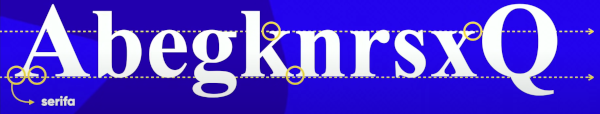
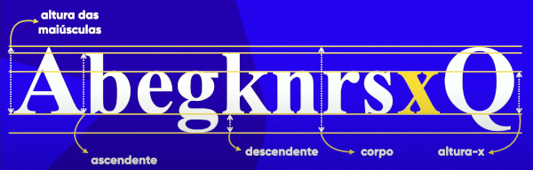
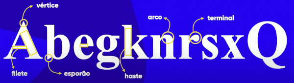
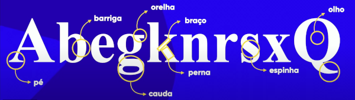

Tipografia
Quando surgiu?
No século 15, os monges copistas trabalhavam copiando livros.
Em 1450...
O inventor alemão Gutenberg inventou a Prensa Mecânica de Tipos Móveis
O que é tipografia?
O estudo da escrita de letras no papel ou em telas.
Anatomia do Tipo
Serifa
A serifa cria uma linha imaginária no cérebro.
Por eexmplo você acabou de não pecreber que a palavra "exemplo" está errada, e também a palavra "perceber".
Itens Métricos
- Altura das maiúsculas.
- Altura X: A letra x é a base de altura para todas as letras minúsculas.
- Ascendente: Vazamento para cima de certas letras minúsculas.
- Descendente: Vazamento para baixo de certas letras minúsculas
- Corpo: Altura total para todas as letras.
Itens Anatômicos
Geométricos
Corporais
Definições Importantes
- Glifo
- Qualquer letra dentro da fonte.
- Fonte
- O conjunto de todos os glifos.
- Família Tipográfica
- Variações da mesma fonte.
Categorias de fontes
- As fontes sans-serif não contém serifa.
- As monoespaçadas tem o mesmo espaço para cada glifo.
- As handwriting ou Script, simulam uma caligrafia feita a mão.
- As display não obedecem regras e são para um tom mais artístico ou estranho.
Estilo das Fontes
Estilos
Usando a propriedade do css font-style podemos aplicar o itálico com o valor italic.
Este texto está em itálico usando CSS.
Usando a propriedade do css font-weight podemos aplicar o negrito com o valor bold.
Este texto está em negrito usando CSS.
Há também algumas variações para o negrito, nessa ordem, lighter, normal, bold, bolder.
Também podem ser usados elementos numéricos que vão de 100-900
Shorthand
Todas as configurações de fonte podem ser resumidas em uma só linha:
p {
font: italic bold 1em Arial, helvetica, sans-serif;
}A ordem dos atributos de uma shorthand em CSS é importante. No caso da propriedade font, devemos informar, na ordem:
font-stylefont-variantfont-weightfont-size/line-heightfont-family
Adicionais (CSS)
É possível aplicar configurações para uma ou mais tags:
h1, h2 {
font-family: Arial, Helvetica, sans-serif;
}Fontes Baixadas
Colocar no site
Para colocar uma fonte baixada no site basta usar esta linha de código:
@font-face {
font-family: 'Bebas Neue';
src: url(fontes/bebas-neue-regular/bebas-neue-regular.ttf) format('truetype'),
url(fontes/bebas-neue-regular/bebas-neue-regular.otf) format('opentype');
}Uso do format()
Tipos de format()
- opentype (otf)
- truetype (ttf)
- embedded opentype
- truetype aat (Apple Advanced Tipography)
- svg
- woff (Web Open Font Format)
- woff2 (Web Open Font Format 2)
Text Indent
Use o atributo text-indent do CSS para deixar os parágrafos com margem, quantifique isso em px.